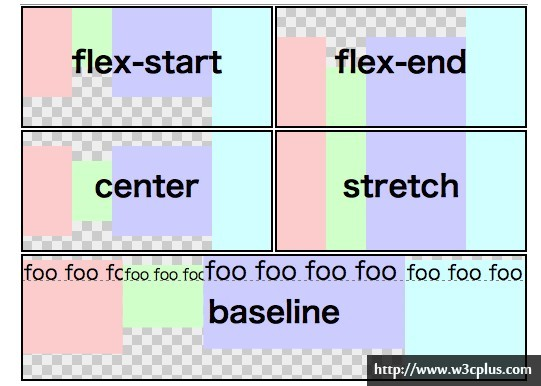
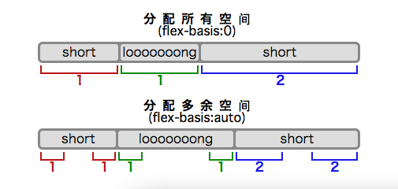

CSS3特性——flex布局
--> w3c 官方文档 2015-05-14
flex布局：一个设置了display: flex |
inline-flex;的元素，就叫做伸缩容器。其内部的子元素称为伸缩项目，这些子元素使用伸缩布局模型来拍版。再已知这些名次的情况下，我们来通过实例感受下这种布局方式。
flex容器结构示意图
main axis
The main axis of a flex container is the primary axis along which flex items are laid out. It extends in
the main dimension.
main-start | main-end
The flex items are placed within the container starting on the main-start side and going toward the
main-end side.
main size
A flex item’s width or height, whichever is in the main dimension, is the item’s main size. The flex
item’s main size property is either the width or height property, whichever is in the main dimension.
cross axis
The axis perpendicular to the main axis is called the cross axis. It extends in the cross dimension.
cross-start | cross-end
Flex lines are filled with items and placed into the container starting on the cross-start side of the
flex container and going toward the cross-end side.
cross size
The width or height of a flex item, whichever is in the cross dimension, is the item’s cross size. The
cross size property is whichever of width or height that is in the cross dimension.
display: flex | inline-flex
flex容器为它的内容创建了一个flex format context，类似于BFC的效果，但是好处是不需要float元素，而且overflow属性已经自动的应用到flex containers里边。
注意：CSS的columns在伸缩容器上没有效果。float、clear和vertical-align在伸缩项目上没有效果。::first-line和::first-letter也失效。
<div class="flex">
<!-- flex item: block child -->
<div id="exp1-item1">block</div>
<!-- flex item: floated element; floating is ignored -->
<div id="exp1-item2" style="float: left;">float</div>
<!-- flex item: anonymous block box around inline content -->
anonymous item 3
<!-- flex item: inline child -->
<span>
item 4
</span>
</div>
block
float没有效果
anonymous item 3
item 4
一个被声明为display: flex;则会成为一个flex容器，并构建一个flex format context，其中的元素自动称为flex-level boxes，不再是block-level
boxes，因此float失效。
flex items: Absolutely-Positioned, Margins and Paddings, Z-Ording, Collapsed, Minimum Size
Absolutyle-Positioned
.block {
height: 100px;
background-color: orange;
border: 2px dotted red;
color: white;
text-align: center;
}
<div class="panel">
<div class="flex">
<div class="block">Normal item</div>
<div class="block" id="exp2-item2">Absolutely-Positioned item, left: 10px, top: 10px</div>
<div class="block"></div>
</div>
</div>
An Normal item
static block
static block
Last Normal item, ahahaha
注意：absolute定位的flex item仍然有效。flex item的宽度会随着内容自动调整。
flex-flow
如果不添加flex-flow属性，item会不管width的设置，只呈现在一行
flex-flow: row wrap; In flex container.
关于flex-flow
flex-flow是用来伸缩行换行，flex-flow属性是同时设定“flex-direction(伸缩流的方向)”和“flex-wrap（伸缩行换行）”属性的缩写，两个属性决定了伸缩容器的主轴与侧轴。此属性主要适用于伸缩容器。
有关于flex-direction
flex-direction属性可以用来设定伸缩容器的主轴的方向，这也决定了用户代理配置伸缩项目的方向。主要适用于伸缩容器，主要包括以下几个值：
row
默认值，表示伸缩容器的主轴与当前书写模式的行内轴（文字布局的主要主向）。主轴起点与主轴终点方向分别等同于当前书写模式的始与结方向。
row-reverse
表示的是除了主轴起点与主轴终点方向交换以外同row属性值的作用。
colomn
表示的是伸缩容器的主轴与当前书写模式的块轴（块布局的主要方向）同向。主轴起点与主轴终点方向分别等同于当前书写模式的前与后方向。简单的可以理解为列布局。
coloumn-reverse
表示的是除了主轴起点与主轴终点方向交换以外同“column”的属性值作用。
关于flex-wrap
flex-wrap属性主要用来控制伸缩容器是单行还是多行，也决定了侧轴方向一新的一行的堆放方向。主要适用于伸缩容器，主要包括以下几个值：
nowrap
默认值，表示的是伸缩容器为单行。侧轴起点方向等同于当前书写模式的起点或前/头在侧轴的那一边，而侧轴终点方向是侧轴起点的相反方向。
wrap
表示的是伸缩容器为多行。侧轴起点方向等同于当前书写模式的起眯或前/头在侧轴的那一边，而侧轴终点方向是侧轴起点的相反方向。
wrap-reverse
除了侧轴起点与侧轴终点方向交换以外同wrap所起作用相同。
如果flex-item的宽度没有设置，则会自动按照内容调整宽度。如果设置了宽度，但没有设置wrap属性，则会等宽铺满一行，width属性不再起作用。
flex-flow: column;
1 width: 200px;
2
3
4
5
6
7
8
9
10
纵向排列的flex-item如果不设置宽度，将自动占满一行。
flex-flow: row-reverse wrap-reverse;
1 width: 200px;
2
3
4
5
6
7
8
9
10
wrap-reverse的效果就是，换到上一行去。同时也可以看到row-reverse与row的区别就是一个是从右往左排，一个从左往右排。
#exp8 {
flex-flow: column wrap;
height: 1000px;
}
#exp8 > div {
height: auto;
width: 20%;
}
#exp8 > div > img {
max-width: 100%;
}
如果将flex容器的高度调小，会变成四列瀑布，并且自动适配间距，此时的flex items的宽度将失效（道理同row布局）
侧轴对齐伸缩项目——align-items
align-items充许您调整伸缩项目在侧轴的对齐方式，主要包括以下几个值：
flex-start
伸缩项目在侧轴起点边的外边距靠住该行在侧轴起点的边。
flex-end
伸缩项目在侧轴终点边的外边距靠住该行在侧轴终点的边。
center
伸缩项目的外边距盒在该行的侧轴上居中放置。（如果伸缩行的尺寸小于伸缩项目，则伸缩项目会向两个方向溢出相同的量）。
stretch
默认值，伸缩项目拉伸，填满整个侧轴
baseline
根据内容的基线对齐

#exp9 {
flex-flow: row;
align-items: flex-start;
}
#exp9 > div {
width: 20%;
color: white;
text-shadow: 1px 1px 2px grey;
border-bottom: 1px solid red;
}
#exp9 > div > img {
max-width: 100%;
vertical-align: top;
}
align-items
flex-start
flex-end
center
stretch
baseline
Image No.1
Image No.2
Image No.3
Image No.4
Image No.5
其中的stretch可以用于构建等高布局
主轴对齐伸缩项目——justify-content
这个属性主要用来设置伸缩项目沿主轴的对齐方式，从而调整伸缩项目之间的间距。设置了这个属性，在主轴方向上设置的任何margin都不会起作用。
flex-start
伸缩项目向一行的起始位置靠齐。该行的第一个伸缩项目在主轴起点边的外边距与该行在主轴起点的边对齐，同时所有后续的伸缩项目与其前一个项目对齐。
flex-end
伸缩项目向一行的结束位置靠齐。该行的最后一个伸缩项目在主轴终点边的外边距与该行在主轴终点的边对齐，同时所有前面的伸缩项目与其后一个项目对齐。
center
伸缩项目向一行的中间位置靠齐。该行的伸缩项目将相互对齐并在行中居中对齐，同时第一个项目与该行的在主轴起点的边的距离等同与最后一个项目与该行在主轴终点的边的距离（如果剩余空间是负数，则保持两端溢出的长度相等）。
space-between
伸缩项目会平均地分布在一行里。如果剩余空间是负数，或该行只有一个伸缩项目，则此值等效于「flex-start」。在其它情况下，第一个项目在主轴起点边的外边距会与该行在主轴起点的边对齐，同时最后一个项目在主轴终点边的外边距与该行在主轴终点的边对齐，而剩下的伸缩项目在确保两两之间的空白空间相等下平均分布。
space-around
伸缩项目会平均地分布在行里，两端保留一半的空间。如果剩余空间是负数，或该行只有一个伸缩项目，则该值等效于「center」。在其它情况下，伸缩项目在确保两两之间的空白空间相等，同时第一个元素前的空间以及最后一个元素后的空间为其他空白空间的一半下平均分布。
justify-content
flex-start
flex-end
center
space-between
space-around
Image No.1
Image No.2
Image No.3
伸缩项目堆栈伸缩行——align-content
这个属性主要用来调整伸缩行在伸缩容器里的对齐方式。不过他会更改flex-wrap的行为，比如说：“wrap”。align-content和align-items相似，但是不是对齐伸缩项目，它对齐的是伸缩行，其主要包括以下几个值：
flex-start
各行向伸缩容器的起点位置堆叠。伸缩容器中第一行在侧轴起点的边会紧靠住伸缩容器在侧轴起点的边，之后的每一行都紧靠住前面一行。
flex-end
各行向伸缩容器的结束位置堆叠。伸缩容器中最后一行在侧轴终点的边会紧靠住该伸缩容器在侧轴终点的边，之前的每一行都紧靠住后面一行。
center
各行向伸缩容器的中间位置堆叠。各行两两紧靠住同时在伸缩容器中居中对齐，保持伸缩容器在侧轴起点边的内容边和第一行之间的距离与该容器在侧轴终点边的内容边与第最后一行之间的距离相等。（如果剩下的空间是负数，则行的堆叠会向两个方向溢出的相等距离。）
space-between
各行在伸缩容器中平均分布。如果剩余的空间是负数或伸缩容器中只有一行，该值等效于「flex-start」。在其它情况下，第一行在侧轴起点的边会紧靠住伸缩容器在侧轴起点边的内容边，最后一行在侧轴终点的边会紧靠住伸缩容器在侧轴终点的内容边，剩余的行在保持两两之间的空间相等的状况下排列。
space-around
各行在伸缩容器中平均分布，在两边各有一半的空间。如果剩余的空间是负数或伸缩容器中只有一行，该值等效于「center」。在其它情况下，各行会在保持两两之间的空间相等，同时第一行前面及最后一行后面的空间是其他空间的一半的状况下排列。
stretch
各行将会伸展以占用剩余的空间。如果剩余的空间是负数，该值等效于「flex-start」。在其它情况下，剩余空间被所有行平分，扩大各行的侧轴尺寸。
align-content
flex-start
flex-end
center
space-between
space-around
stretch
伸缩项目在侧轴方向上的对齐方式——align-self
伸缩项目在侧轴方向上的对齐方式，align-self：auto | flex-start | flex-end | center | baseline |
stretch;
auto
如果'align-self'的值为'auto'，则其计算值为元素的父元素的'align-items'值，如果其没有父元素，则计算值为'stretch'。
flex-start
弹性盒子元素的侧轴（纵轴）起始位置的边界紧靠住该行的侧轴起始边界。
flex-end
弹性盒子元素的侧轴（纵轴）起始位置的边界紧靠住该行的侧轴结束边界。
center
弹性盒子元素在该行的侧轴（纵轴）上居中放置。（如果该行的尺寸小于弹性盒子元素的尺寸，则会向两个方向溢出相同的长度）。
baseline
如弹性盒子元素的行内轴与侧轴为同一条，则该值与'flex-start'等效。其它情况下，该值将参与基线对齐。
stretch
如果指定侧轴大小的属性值为'auto'，则其值会使项目的边距盒的尺寸尽可能接近所在行的尺寸，但同时会遵照'min/max-width/height'属性的限制。
flex-end
center
flex-start
baseline
baseline
stretch
auto
auto
auto
改变元素布局的顺序——order
传统上不改变元素的结构要改变元素的布局顺序一直是一个痛苦的事情。不过在Flexbox中，你可以通过“order”属性来修改伸缩项目的布局顺序（在不调整结构前提之下）。这个属性一直接受的整数值——称为系数集——也称为排序组，会出现在伸缩项目中。
默认情况之下，所有的伸缩项目的顺序组都是“0”。我们可以很容易的给每个伸缩项目设置不同的顺序值。更高的值会排在后面，而原来的HTML结构并不会有任何变化。
No.1 ~ No.4图片对应的order值：0, 0, 0, 0
随机改变四个图片的order属性
使你的元素具有弹性——flex
可以通过“flex”属性设置一个可用的空间。none | [ <'flex-grow'> <'flex-shrink'>? || <'flex-basis'>
]
flex-grow
此number部件可以用来设置「flex-grow」长写并指定扩展比率，也就是剩余空间是正值的时候此伸缩项目相对于伸缩容器里其他伸缩项目能分配到空间比例。若省略了此部件，则它会被设为「1」。
flex-shrink
此number部件可以用来设置「flex-shrink」长写并指定收缩比率，也就是剩余空间是负值的时候此伸缩项目相对于伸缩容器里其他伸缩项目能收缩的空间比例。若省略了此部件，则它会被设为「1」。在收缩的时候收缩比率会以伸缩基准值加权。
flex-basis
与「width」属性使用相同的值的此部件可以用来设置「flex-basis」长写并指定伸缩基准值，也就是根据可伸缩比率计算出剩余空间的分布之前，伸缩项目主轴长度的起始数值。若在「flex」缩写省略了此部件，则「flex-basis」的指定值是长度零。若「flex-basis」的指定值是「auto」，则伸缩基准值的指定值是元素主轴长度属性的值。（这个值可能是关键字「auto」，代表元素的长度取决于其内容。）

none
关键字「none」的计算值为「0 0 auto」。
「flex」的各部件的初始值等同于「flex: 0 1 auto」。